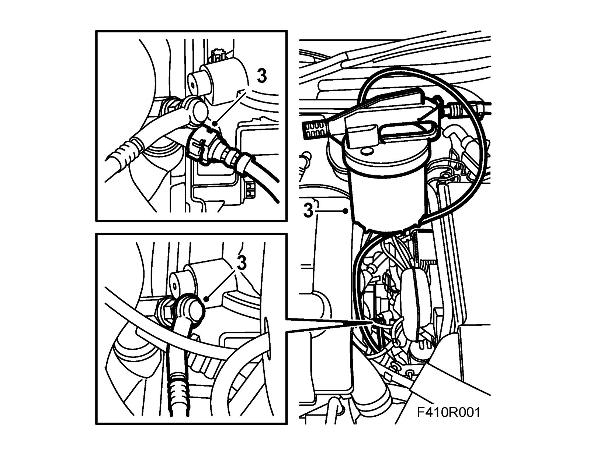
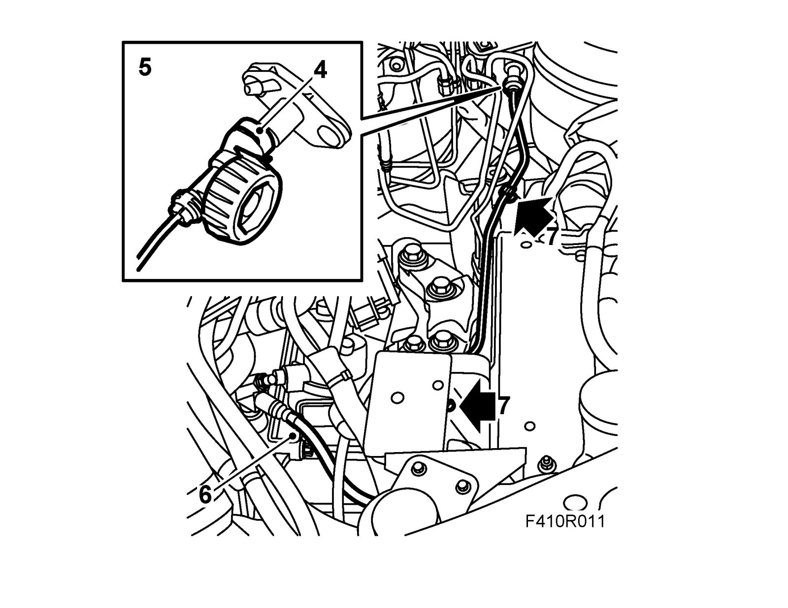

Hydraulic Hose: Service and Repair
Delivery pipe, LHDTo remove
1. Apply wing covers.
2. Remove Hydraulic unit, TCS/ESP
3. Connect 88 19 096 Bleeding equipment hose to the bleed nipple on the slave cylinder and draw out the brake fluid from the clutch system.

4. Undo the clip securing the delivery pipe to the master cylinder.
5. Remove the delivery pipe from the master cylinder.

6. Detach the delivery pipe from the slave cylinder connection.
7. Remove the pipe.
To fit
1. Connect the delivery pipe to the master cylinder.
2. Press the pipe to the clip.
3. Connect the delivery pipe to the slave cylinder connection.
4. Fill with brake fluid and bleed the clutch as described in Bleeding the clutch hydraulic system in the car. Service and Repair
5. Fit Hydraulic unit, TCS/ESP.
6. Remove the wing covers.
7. Test the clutch and brakes.